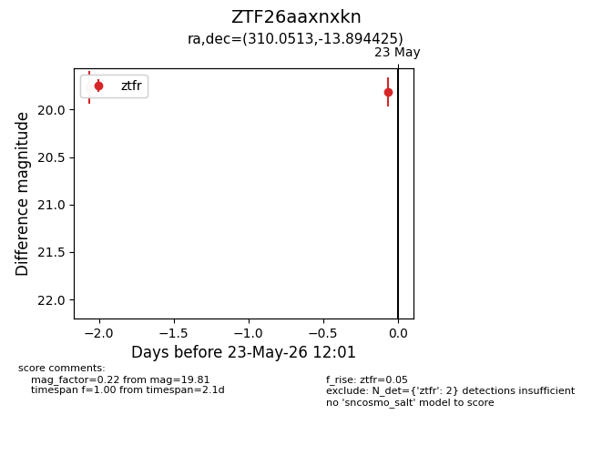
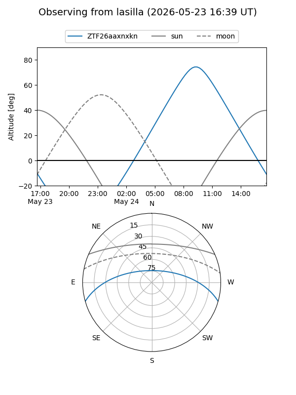
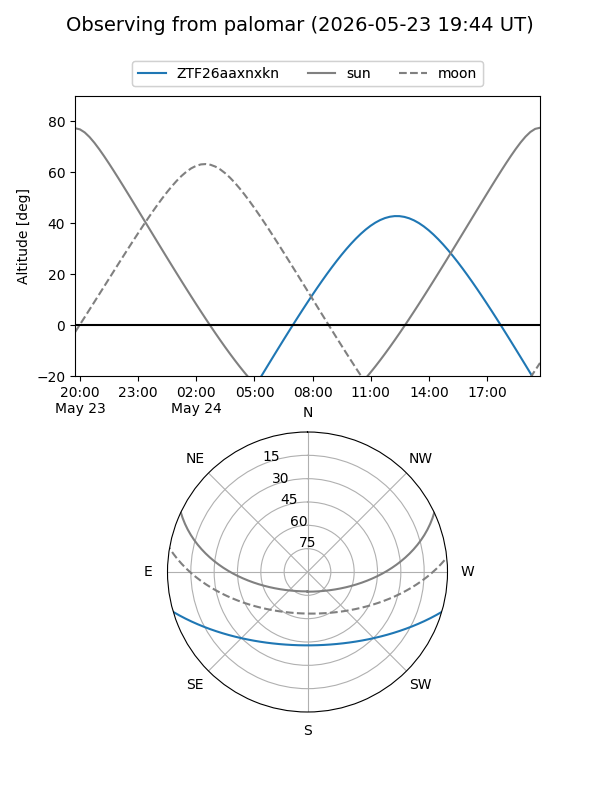
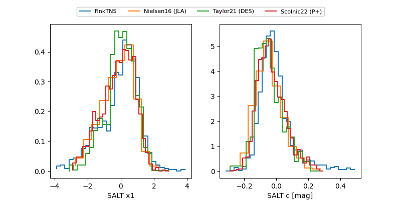

ZTF26aaxnxkn
Target ZTF26aaxnxkn at 2026-05-23 12:03
Aliases and brokers:
lsst-FINK: link
lsst-Lasair: link
lsst-ALeRCE: link
ztf-FINK: link
ztf-Lasair: link
ztf-ALeRCE: link
alt names
ZTF26aaxnxkn (ztf,fink_ztf)
Coordinates:
equatorial (ra, dec) = 310.0513,-13.89443
equatorial (HMS+DMS) = 20:40:12.30,-13:53:39.93
galactic (l, b) = (32.1727,-30.28458)
Flags:
Photometry:
last ztfr=19.81
2 ztfr detections
Lightcurve

Visibility


Additional plots
